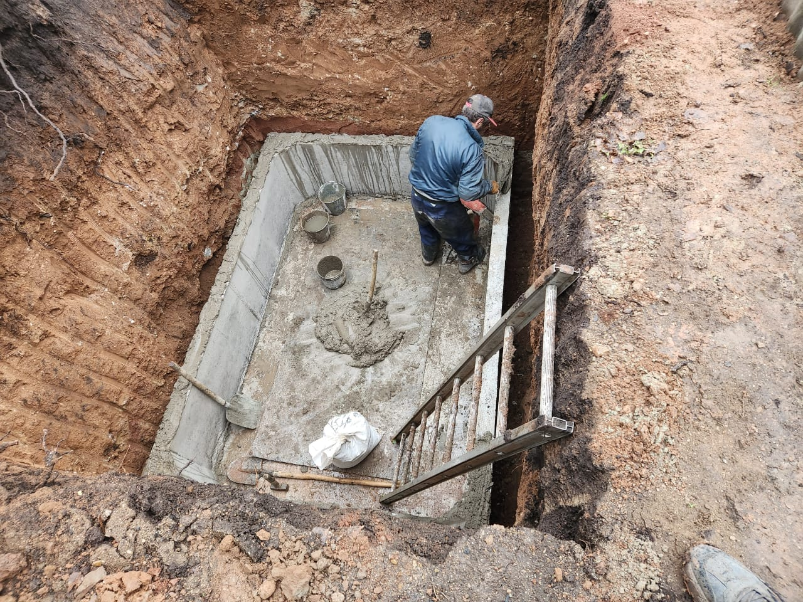
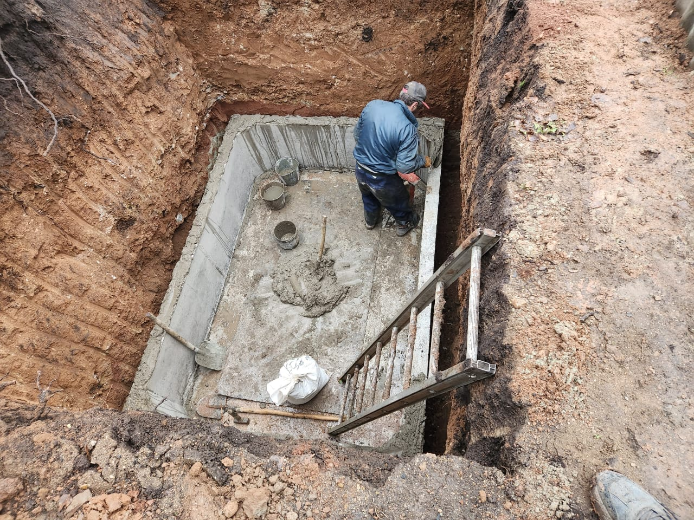
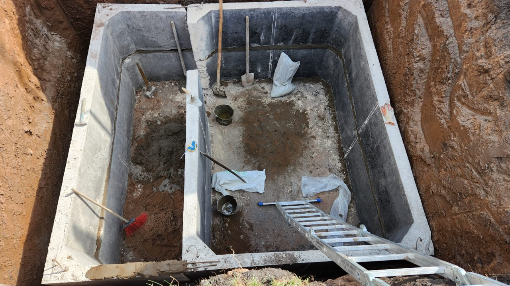
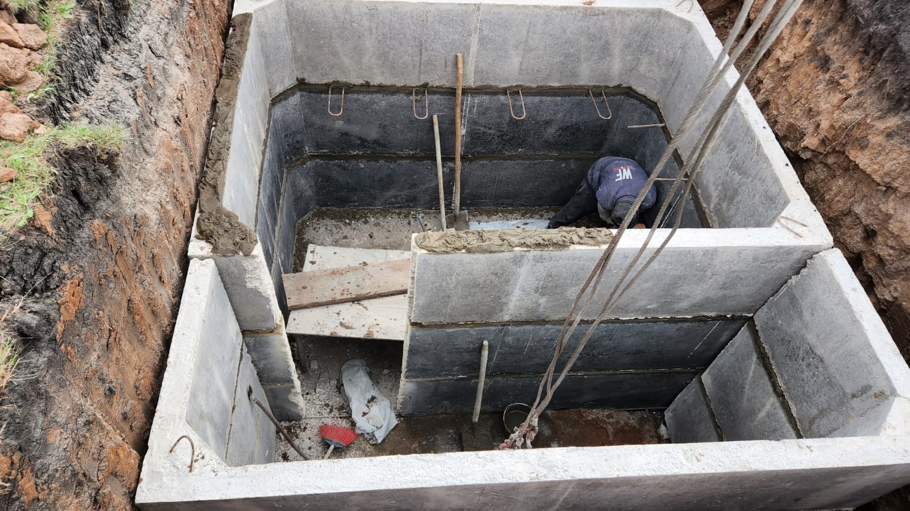
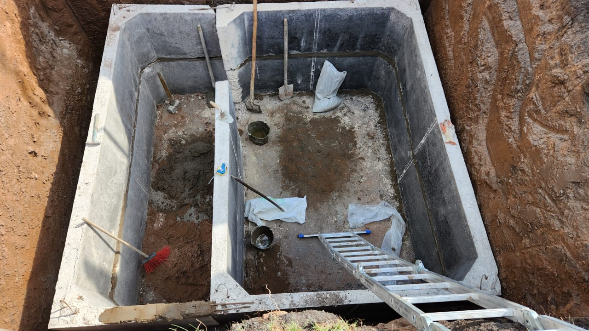
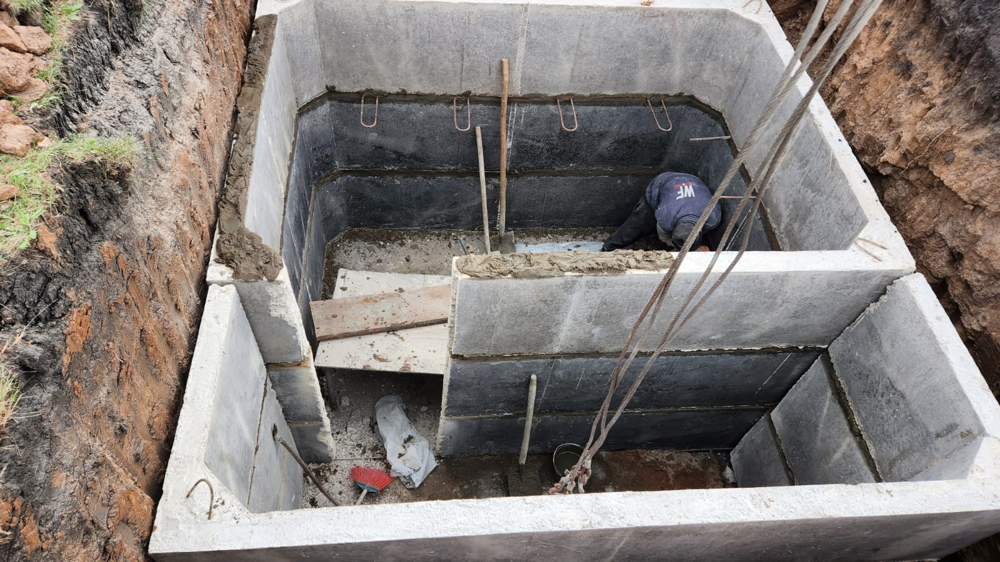
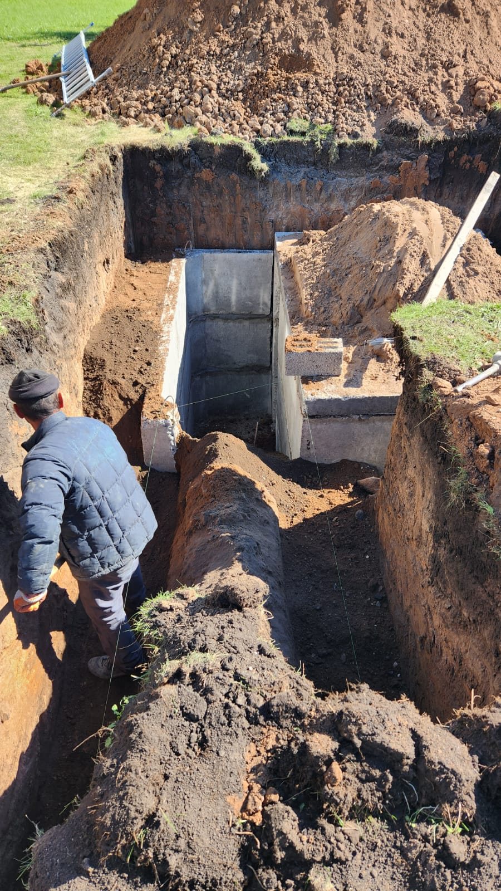
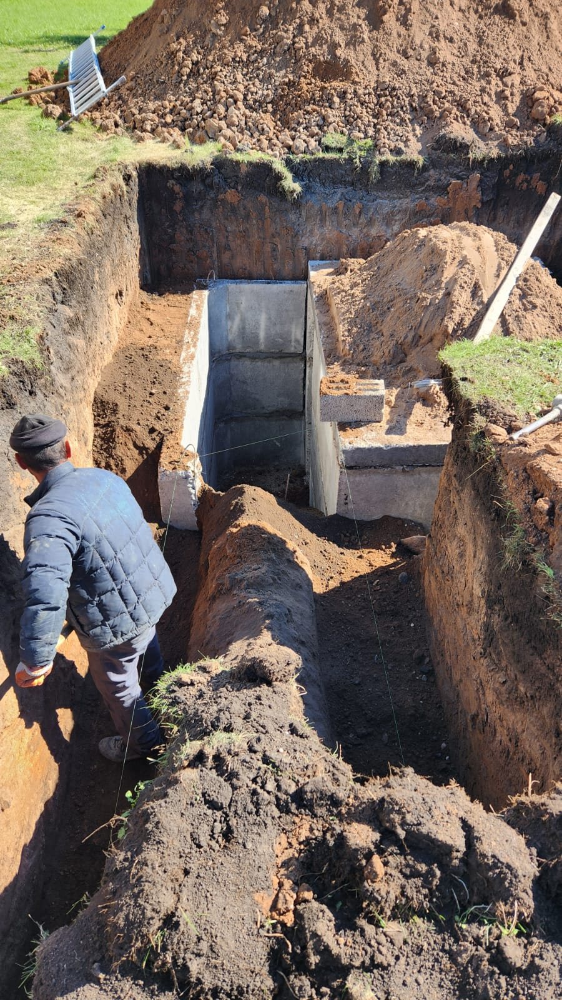

Каталог продукции
Цех ЖБИ в г. Туймазы производит и поставляет железобетонные изделия, керамзитные блоки, фундаментные блоки, ж/б кольца, готовые погреба, цемент и сыпучие материалы. Ниже представлены основные позиции. По нестандартным размерам и объёмам можно обратиться по телефону или в WhatsApp.

Керамзитные блоки
Стеновые и перегородочные керамзитные блоки для домов, гаражей и хозпостроек.
Цена от 87 руб/шт

Фундаментные блоки (ФБС)
Железобетонные блоки для ленточных фундаментов, стен подвала и технических помещений.
Цена от 3500 руб/шт

Ж/Б кольца
Кольца и крышки для колодцев, септиков и смотровых шахт различных диаметров.
Цена от 1500 руб/шт
Ж/Б погреба
Готовые железобетонные погреба двух видов: с верхним спуском и со ступеньками сбоку.
Комплекты под установку «под ключ»
Цемент
Евроцемент М500 в мешках и биг-бегах для бетона, стяжек и монолитных работ.
Цена от 600 руб
Сыпучие материалы
Песок, гравий, глина и керамзит с доставкой на объект.
Цена от 2000 руб/м³


 



 



 
